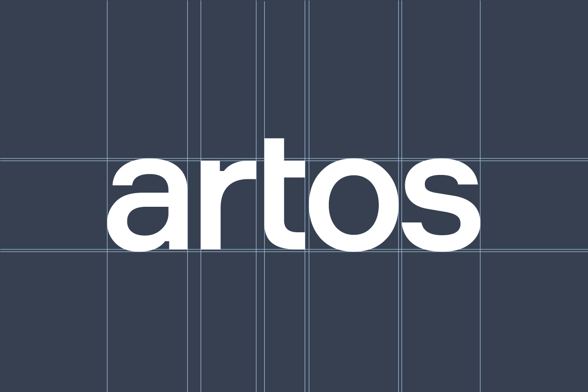
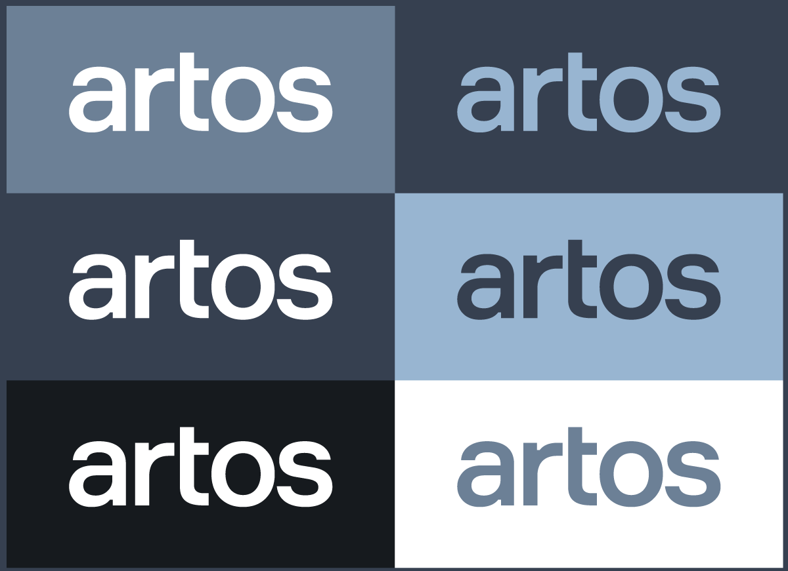
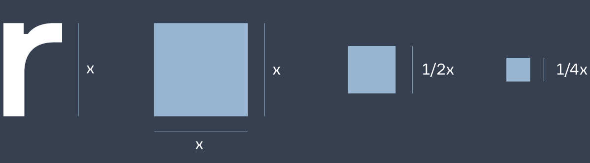
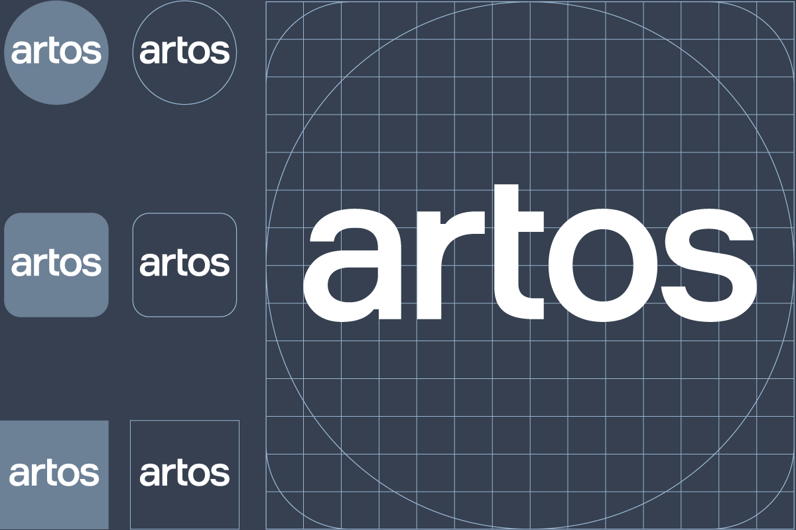
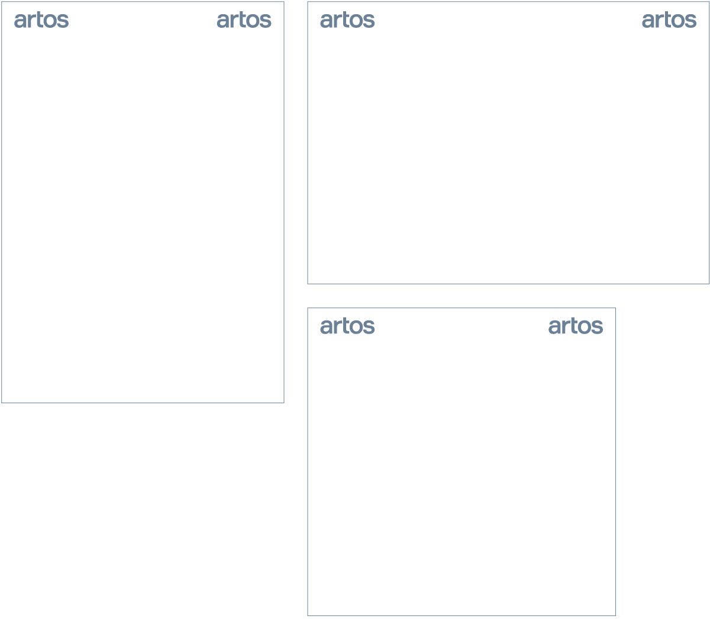
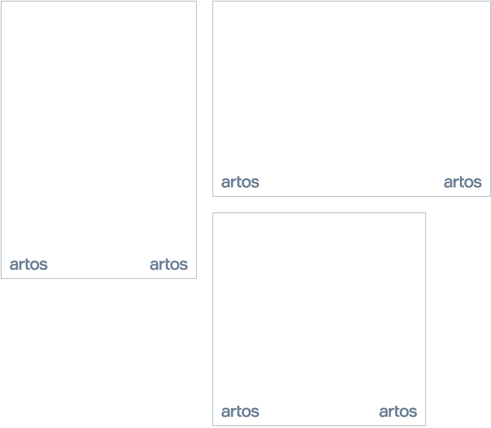
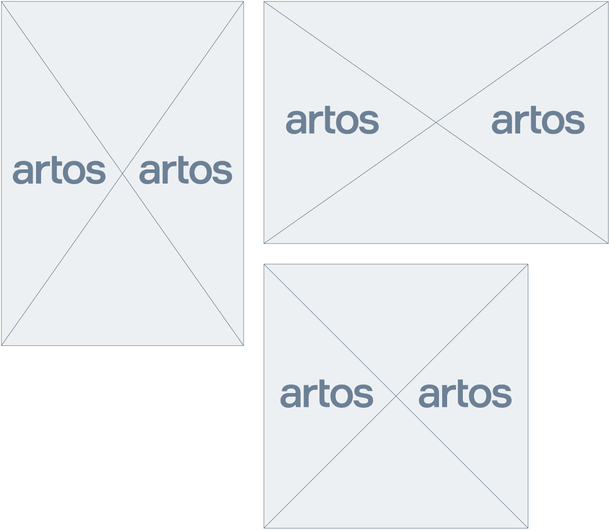
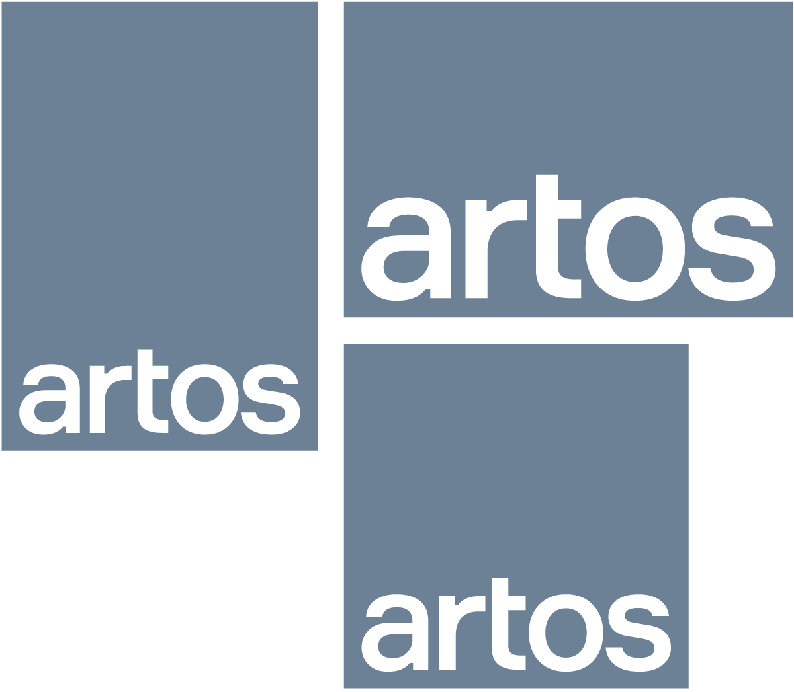
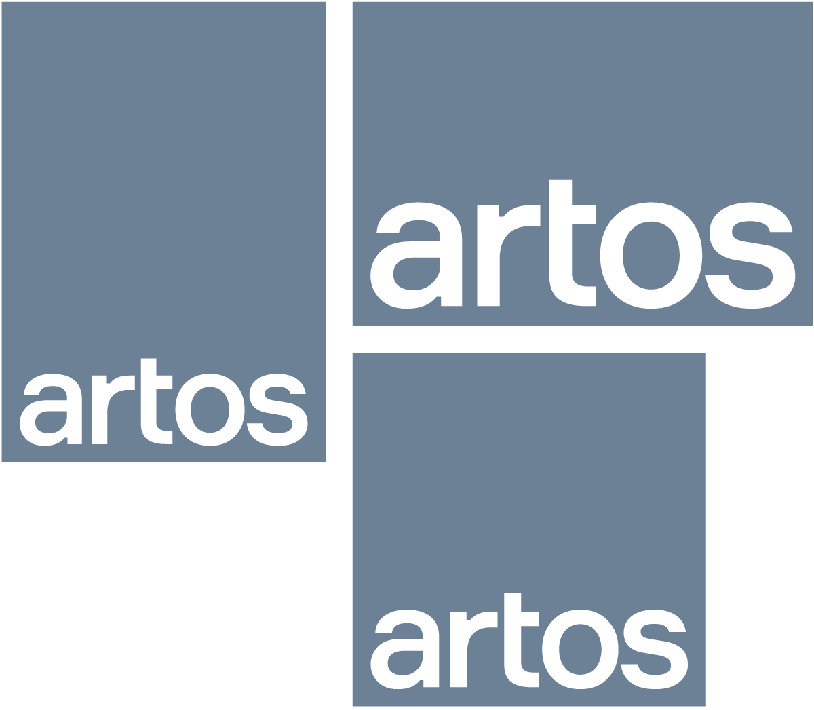

Логотип имеет сбалансированную конструкцию, основанную на базовых правилах типографики. Не допустимо изменять размеры букв и расстояния между ними.
- Дизайн система / Визуальный стиль / Логотип
Логотип
Логотип Artos является самым важным элементом нашей корпоративной идентичности, и к нему всегда следует относиться с уважением. Написание имени нашим фирменным шрифтом представляет наши ценности, а также является самым мощным активом бренда и безошибочным идентификатором. Логотип будет отображаться в качестве подписи или подтверждения во всех наших сообщениях и укреплять авторитет нашего бренда.
Конструкция

Версии

Логотип Artos применяется в рамках основных цветов бренда.
Белый используется, когда фон темный или состоит из темного тона изображения. И наоборот, синий и темно-синий используется, когда фон светлый или содержит светлый тон изображения. Обязательно используйте версию, обеспечивающую максимальный контраст и четкость по отношению к фону.
Логотип никогда не должен быть изменен, окрашен или объединен с любыми другими названиями или элементами. Всегда должен использоваться оригинальный логотип. Никогда не изменяйте логотип и не дополняйте его другими елементами.
Границы

Логотип Artos наиболее эффективен, когда окружен чистым пространством. Это гарантирует высокую степень видимости и разборчивости при сохранении его целостности.
Этот размер представляет собой рекомендованное пространство вокруг логотипа и должен применяться в большинстве случаях.
Важно отметить, что определенное свободное пространство не является минимальным. Разрешено, а в некоторых случаях рекомендуется, выходить за рамки этого, чтобы создать четкий и последовательный дизайн.
Для определения границ логотипа используется единица равная высоте строчной буквы «r».
Иконки и Аватарки

В упрощенном цифровом применении, таком как иконки приложений, аватарки и изображения профилей, мы используем весь логотип. Мы уменьшаем пространство вокруг логотипа и устраняем любые проблемы, связанные с разборчивостью. Чистое пространство регулируется для обеспечения максимальной разборчивости. Логотип должен располагаться по центру по горизонтали и вертикали.
Расположение
Чтобы свести к минимуму вариации и обеспечить согласованность и единообразие внешнего вида, старайтесь использовать одинаковое положение и размер в похожих приложениях.
Предпочтительные позиции логотипа Artos показаны ниже.
Основные позиции

Углы — наши основные позиции для логотипа. Это верно для большинства форматов, таких как портретный, альбомный и квадратный форматы.
Вторичные позиции

В некоторых случаях из-за содержания и формата логотип может быть размещен на вторичной позиции, снизу.
Дополнительные позиции


Для более выразительной композиции, в особых случаях, как например, при использовании на фоне изображения, логотип может располагаться посередине.
В этих случаях допускается уменьшение границ логотипа.

В некоторых материалах возможно размещать логотип в нижней части, растянутым по всей длине.
В этих случаях допускается уменьшение границ логотипа.